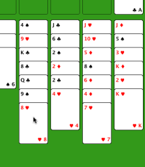

Freecell ohjeet
Freecell ohjeet
Miten pelaan?
Korttien siirtäminen on helppoa. Klikkaa korttia, jonka haluat siirtää, jolloin se muuttuu tummaksi. Klikkaa tämän jälkeen korttia (tai paikkaa), johon haluat kortin siirtää. Kortti siirtyy, jos siirto on sääntöjen mukainen. Jos huomaat tehneesi virheen, voit perua niin monta siirtoa taaksepäin kuin haluat.

|
Tässä kuvassa siirretään herttakahdeksikko patayhdeksikön päälle. Kolmatta pinoa on klikattu ja päällimmäisenä oleva kortti on tummentunut. |
|  | Tässä kuvassa kohdepinoa on klikattu ja kortti on siirtynyt uudelle paikalleen. Kortin olisi myös voinut siirtää mihin tahansa ylhäällä näkyvistä tyhjistä ruuduista. |